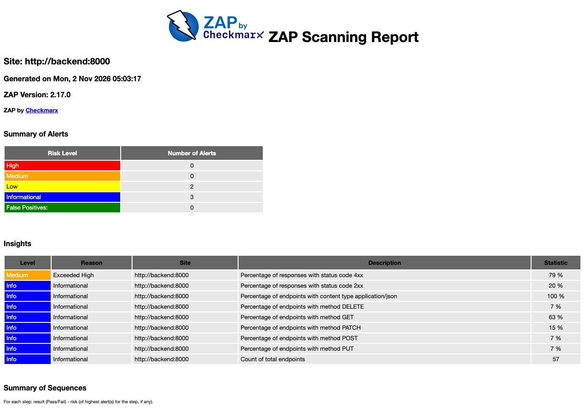
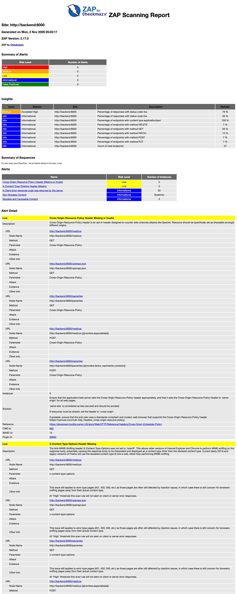
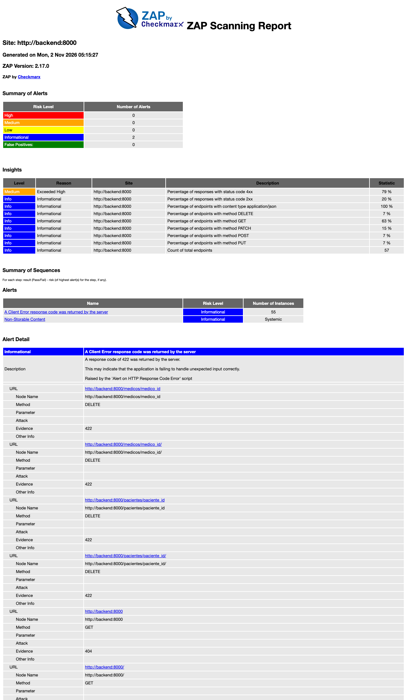

Análisis dinámico con OWASP ZAP del Sistema de gestión de citas médicas
| Autores | Eduardo Peniche, Gianina Casanova, Cesar Morales |
|---|---|
| Fecha del informe | 1 de noviembre de 2026 |
| Objeto analizado | API HTTP del backend (FastAPI), imagen de Docker con destino production |
| Herramienta | OWASP ZAP 2.17.0, imagen ghcr.io/zaproxy/zaproxy:stable |
| Método | Análisis dinámico de la API a partir de su definición OpenAPI |
| Repositorio | Rama main, commits fac0292 a 2f4af8e |
Resumen ejecutivo
Este informe documenta el análisis de seguridad de la API del sistema de citas médicas con OWASP ZAP. El análisis se ejecutó antes y después de las correcciones. Cada ejecución incluyó un nivel pasivo y un nivel activo.
El análisis inicial encontró 5 tipos de alerta. Dos tenían riesgo bajo y tres eran informativas. No hubo alertas de riesgo medio ni alto. Las inyecciones SQL y el XSS no produjeron hallazgos.
Una sola corrección resolvió los tres hallazgos accionables. La corrección agrega tres encabezados de seguridad a todas las respuestas HTTP. El análisis posterior no muestra alertas de riesgo bajo. Quedan 2 alertas informativas. Ambas describen el comportamiento correcto de la API y se aceptan con justificación.
- 2 → 0 alertas de riesgo bajo.
- 3 → 2 alertas informativas.
- 118 → 120 reglas superadas.
- 0 alertas de riesgo medio o alto.
Alcance y metodología
Alcance
El análisis cubre la API del backend. ZAP importa la definición OpenAPI desde /openapi.json y prueba cada ruta definida. El frontend Astro queda fuera del alcance.
Niveles de análisis
| Nivel | Comando | Descripción |
|---|---|---|
| Pasivo | zap-api-scan.py -S | Envía las peticiones definidas en OpenAPI y analiza las respuestas. No ejecuta ataques. |
| Activo | zap-api-scan.py | Hace lo mismo que el nivel pasivo. Además envía peticiones de ataque a cada ruta y parámetro, con la política de reglas por defecto de ZAP. |
Ambos niveles crean registros. El nivel activo también modifica y borra registros. Por esta razón no se ejecutan contra la base de datos de desarrollo.
Entorno de ejecución
El archivo zap/compose.yml define un entorno aislado. El backend usa la imagen de producción. Su base de datos SQLite vive en un sistema de archivos temporal (tmpfs). Docker borra esos datos al detener el contenedor. ZAP escribe sus reportes en zap/reportes/<fase>/.
Ejecución
mkdir -p zap/reportes/antes
FASE=antes docker compose -f zap/compose.yml --profile scan run --rm zap-pasivo
FASE=antes docker compose -f zap/compose.yml --profile scan run --rm zap-activo
docker compose -f zap/compose.yml down -vLa variable FASE toma el valor antes o despues. Define la carpeta de salida. Cada ejecución produce un reporte en HTML, JSON y Markdown.
Resultados previos a las correcciones
El análisis activo inicial generó 73 instancias en 5 tipos de alerta. El análisis pasivo produjo los mismos 5 tipos con menos instancias de error 4xx.
| ID | Alerta | Regla | CWE | Riesgo | Instancias |
|---|---|---|---|---|---|
| H-01 | X-Content-Type-Options Header Missing | 10021 | 693 | Bajo | 5 |
| H-02 | Cross-Origin-Resource-Policy Header Missing or Invalid | 90004 | 693 | Bajo | 5 |
| H-03 | Storable and Cacheable Content | 10049 | 524 | Informativo | 3 |
| H-04 | Non-Storable Content | 10049 | 524 | Informativo | 5 |
| H-05 | A Client Error response code was returned by the server | 100000 | 388 | Informativo | 55 |
| Total de instancias | 73 | ||||

reportes/antes/activo.html.Hallazgos y correcciones
H-01. Encabezado X-Content-Type-Options ausente
| Riesgo | Bajo · CWE-693 · WASC-15 |
|---|---|
| Rutas afectadas | GET /medicos, POST /medicos, GET /pacientes, POST /pacientes, GET /openapi.json |
| Estado | Resuelto |
Descripción. La API no envía el encabezado X-Content-Type-Options: nosniff. Un navegador antiguo puede interpretar el cuerpo de una respuesta con un tipo distinto al declarado.
Corrección. Un middleware agrega X-Content-Type-Options: nosniff a todas las respuestas.
H-02. Encabezado Cross-Origin-Resource-Policy ausente
| Riesgo | Bajo · CWE-693 · WASC-14 |
|---|---|
| Rutas afectadas | Las mismas cinco rutas de H-01 |
| Estado | Resuelto |
Descripción. La API no declara qué orígenes pueden cargar sus recursos. El encabezado Cross-Origin-Resource-Policy reduce el riesgo de ataques de canal lateral, como Spectre.
Corrección. El mismo middleware agrega Cross-Origin-Resource-Policy: same-origin. El frontend consume la API por su propio origen, mediante el proxy /api. El valor same-origin no afecta ese flujo.
H-03. Contenido almacenable en caché
| Riesgo | Informativo · CWE-524 · WASC-13 |
|---|---|
| Rutas afectadas | GET /medicos, GET /pacientes, GET /openapi.json |
| Estado | Resuelto |
Descripción. Las respuestas de lectura no incluyen Cache-Control. Un proxy o un navegador puede guardarlas y entregarlas a otro usuario. Las respuestas de /pacientes contienen datos personales.
Corrección. El middleware agrega Cache-Control: no-store a todas las respuestas.
Implementación de H-01, H-02 y H-03
El módulo backend/src/clinica_app/adapters/http/security_headers.py contiene el middleware. main.py lo registra con register_security_headers(app), igual que los manejadores de error.
SECURITY_HEADERS = {
"X-Content-Type-Options": "nosniff",
"Cross-Origin-Resource-Policy": "same-origin",
"Cache-Control": "no-store",
}
def register_security_headers(app: FastAPI) -> None:
@app.middleware("http")
async def add_security_headers(request, call_next):
response = await call_next(request)
response.headers.update(SECURITY_HEADERS)
return responseLa prueba test_respuestas_incluyen_encabezados_de_seguridad verifica los tres encabezados en una respuesta 200 y en una 404.
H-04. Contenido no almacenable en caché
| Riesgo | Informativo · CWE-524 · WASC-13 |
|---|---|
| Rutas afectadas | Antes: DELETE y PUT de /pacientes/{id}, PUT de /medicos/{id} y GET de ambos con identificador inválido (422). Después: DELETE y PUT de /pacientes/{id}, y GET de /medicos, /pacientes y /pacientes/{id} con no-store |
| Estado | Aceptado |
Descripción. ZAP informa que estas respuestas no se pueden guardar en caché. La regla es informativa. Sugiere cachear solo si la respuesta no contiene datos personales.
Decisión. No se corrige. Los métodos PUT y DELETE no son almacenables por definición. Las respuestas GET de pacientes y médicos contienen datos personales. La corrección de H-03 exige no-store en ellas. Quitar no-store reabriría H-03.
H-05. Respuestas de error del cliente
| Riesgo | Informativo · CWE-388 · WASC-20 |
|---|---|
| Rutas afectadas | 55 instancias en 45 rutas distintas, con respuestas 404, 405 y 422 |
| Estado | Aceptado |
Descripción. Un script de ZAP genera una alerta por cada respuesta 4xx. La alerta sugiere que la aplicación puede manejar mal las entradas inesperadas.
Decisión. No se corrige. Las respuestas 422 rechazan identificadores y fechas con formato inválido. Las respuestas 404 y 405 responden a rutas y métodos que no existen. Este es el comportamiento esperado de la API. Para eliminar la alerta, la API tendría que aceptar entradas inválidas.
El reporte también incluye un indicador (insight) con el 79 % de respuestas 4xx. Este valor refleja el método de prueba. El análisis activo envía muchas peticiones con datos de ataque. La API las rechaza. Por eso el indicador no cambia entre el análisis previo y el posterior.
Verificación posterior a las correcciones
Comparación de resultados
| ID | Alerta | Antes | Después | Estado |
|---|---|---|---|---|
| H-01 | X-Content-Type-Options Header Missing | 5 | 0 | Resuelto |
| H-02 | Cross-Origin-Resource-Policy Header Missing or Invalid | 5 | 0 | Resuelto |
| H-03 | Storable and Cacheable Content | 3 | 0 | Resuelto |
| H-04 | Non-Storable Content | 5 | 5 | Aceptado |
| H-05 | A Client Error response code was returned by the server | 55 | 55 | Aceptado |
| Total de instancias | 73 | 60 | ||
Los contadores de ZAP del análisis activo cambian de WARN-NEW: 2, PASS: 118 a WARN-NEW: 0, PASS: 120. El análisis pasivo produce el mismo resultado final.
Encabezados de respuesta
Una consulta directa al backend confirma los tres encabezados en una respuesta 200 y en una respuesta 404.
$ curl -s -D - -o /dev/null http://localhost:8000/pacientes
HTTP/1.1 200 OK
content-type: application/json
x-content-type-options: nosniff
cross-origin-resource-policy: same-origin
cache-control: no-store
$ curl -s -D - -o /dev/null http://localhost:8000/ruta-inexistente
HTTP/1.1 404 Not Found
content-type: application/json
x-content-type-options: nosniff
cross-origin-resource-policy: same-origin
cache-control: no-storeControles que no produjeron hallazgos
Estas reglas activas se ejecutaron en ambos análisis y no generaron alertas.
- Inyección SQL, con 6 variantes (genérica, MySQL, Hypersonic, Oracle, PostgreSQL y MsSQL).
- Cross-site scripting reflejado, persistente y basado en DOM.
- Path traversal e inclusión remota de archivos.
- Inyección de comandos del sistema operativo y de código del servidor.
- Divulgación de errores de aplicación y de metadatos en la nube.
- Log4Shell, Spring4Shell y entidades XML externas.
Limitaciones del análisis
- El análisis cubre solo el backend. El frontend Astro no se analizó.
- La API no tiene autenticación ni autorización. ZAP recibió respuestas 201 al crear pacientes y médicos sin credenciales. ZAP no emite una alerta para esta condición. Es una decisión de diseño del proyecto y un riesgo para un uso en producción.
- El análisis usó HTTP dentro de la red de Docker. Las reglas de TLS, como HSTS, no se evaluaron.
- El análisis activo usó la política por defecto de ZAP. No es una prueba de penetración manual.
- Los resultados corresponden a ZAP 2.17.0 y a sus reglas en la fecha del análisis. Una versión nueva puede reportar alertas distintas.
Evidencia y trazabilidad
| Etapa | Nivel | HTML | JSON | Markdown |
|---|---|---|---|---|
| Antes | Pasivo | pasivo.html | pasivo.json | pasivo.md |
| Antes | Activo | activo.html | activo.json | activo.md |
| Después | Pasivo | pasivo.html | pasivo.json | pasivo.md |
| Después | Activo | activo.html | activo.json | activo.md |
| Commit | Mensaje | Contenido |
|---|---|---|
fac0292 | chore: agregar compose de OWASP ZAP | Entorno de análisis (zap/compose.yml) |
af3b590 | docs: agregar reportes ZAP previos a las correcciones | Evidencia inicial |
247f491 | fix: agregar encabezados de seguridad a las respuestas HTTP | Corrección de H-01, H-02 y H-03, con su prueba |
2f4af8e | docs: agregar reportes ZAP posteriores a las correcciones | Evidencia final |
Anexo. Detalle de alertas en los reportes de ZAP

